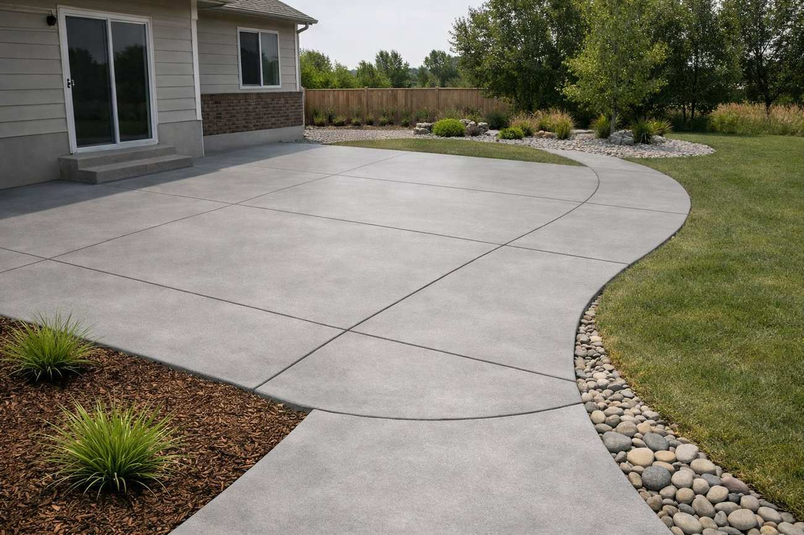

Concrete Patios & Walkways in Logan, UT
Backyard patios, sidewalks and garden paths poured to last — with the finish that fits your home and a slope that keeps water away from it. Tell us about your project and we’ll work to connect you with a licensed local concrete contractor.

Concrete Patios, Walkways & Sidewalks in Cache Valley
A patio is where you actually live outdoors — and in Cache Valley it has to survive heavy snow, summer sun, and the freeze-thaw cycle that cracks poorly built slabs. Cache County Concrete helps homeowners across Logan, North Logan, Smithfield, Providence, Hyrum, Nibley, Hyde Park and Wellsville find licensed local contractors who pour patios, walkways, sidewalks and pool decks — each built with the drainage, base prep and air-entrained mix it takes to last here.
Patio & Flatwork Services Offered
- Patios — new installs, expansions and replacements in any shape.
- Walkways & paths — front walks, garden paths and connectors.
- Sidewalks — residential and commercial, ADA-compliant where required.
- Pool decks — slip-resistant, cool-to-the-touch finishes.
- Porches & steps — entryways and landings that match your home.
- Pads — for hot tubs, sheds, AC units and grills.
What Does a Concrete Patio Cost in Logan?
As a rough guide, a standard broom-finish patio in the Cache Valley area runs around $8 to $15 per square foot installed, with decorative finishes costing more. The final price comes down to:
- Size and shape — square footage and how many curves or angles are involved.
- Finish — broom is most affordable; stamped, colored and exposed-aggregate cost more.
- Site prep — grading, drainage and base work for your soil.
- Access & tear-out — tight backyard access or removing an old slab adds labor.
Every yard is different, so the only way to get a real number is an on-site look. The contractor you’re referred to provides a clear, written quote for free — no obligation.
Patio Finish & Design Options
- Broom finish — the durable, slip-resistant, budget-friendly standard.
- Stamped concrete — the look of flagstone, slate or pavers in one slab. See the stamped concrete page.
- Exposed aggregate — textured, great traction, and hides wear well.
- Colored / stained — integral color or stains in earth tones to match your home.
- Decorative borders — banded edges that frame the space.
How a Contractor Builds a Patio That Lasts
- Free on-site quote — the contractor measures, checks drainage, and talks through finishes.
- Layout & slope — the grade is set so water always drains away from your home.
- Compacted gravel base — a solid, compacted sub-base so the slab won’t settle.
- Forming & reinforcement — clean forms and rebar or mesh sized to the slab.
- Pour & finish — an air-entrained mix poured and finished in your chosen texture.
- Joints, cure & seal — control joints to manage cracking, proper curing, and a sealer to protect the surface.
Caring for Your Concrete Patio
Reseal every couple of years, sweep and rinse it occasionally, and avoid harsh deicing salts in the first winter, which can pit a fresh surface. With basic care, a concrete patio here easily lasts decades.
Patio FAQ
How much does a concrete patio cost in Logan?
A standard broom-finish patio generally runs about $8–$15 per square foot installed, with stamped or colored finishes costing more. Size, finish, site prep and access all affect the price. The contractor provides a free written quote after seeing the space.
For example, a 12 by 16 foot broom-finish patio (192 sq ft) often runs about $1,500 to $3,000. A larger 20 by 20 foot patio (400 sq ft) is often $3,200 to $6,000, and stamped finishes run higher. Last updated October 2026. These are general planning ranges from published cost guides, not quotes. See the full concrete cost guide for Logan.
How thick should a patio be?
Four inches is standard for a residential patio. Thickness and reinforcement are added for heavier uses like hot-tub pads. Proper base prep matters just as much as thickness in our freeze-thaw climate.
Do I need a permit for a patio in Logan?
A simple at-grade patio on private property often doesn’t require a permit, but setbacks and covered structures can change that, and rules vary by city. Your contractor can tell you what your specific project needs.
Concrete patio or pavers — which is better?
A poured concrete patio is one solid slab, so there are no joints for weeds to grow through and no individual pavers to shift or settle. It’s generally lower-maintenance and easier to clean. Pavers can be lifted and replaced individually, but most homeowners here prefer the seamless, durable result of poured concrete.
Can a contractor match my existing concrete?
A contractor can usually get close on color and finish, but new concrete cures lighter and ages differently than old, so an exact match isn’t guaranteed. For a seamless look, a fresh finish or a stain over the whole area often works best.
What’s the best finish around a pool?
A textured, slip-resistant finish like broom or exposed aggregate is ideal around water, and a light color stays cooler underfoot. Your contractor can recommend the right option for your pool deck.
How long does a concrete patio last?
With proper base prep, an air-entrained mix and occasional resealing, a concrete patio in Cache Valley commonly lasts 25–30 years or more.
Please note: Cache County Concrete is a free lead-referral and information service, not a licensed contractor, and does not perform concrete work. All quotes and work are provided by independent, licensed local contractors. Verify licensing and insurance directly with the contractor before any work begins.
Planning a Patio That Lasts Through Logan Winters
A Logan patio has to handle hot, dry summers and a winter of snow, ice and freeze-thaw cycles. The details that make the difference are easy to miss: a compacted gravel base, a gentle slope away from the house so meltwater doesn’t pool against the foundation, control joints spaced to guide cracking, and an air-entrained mix that resists scaling. A patio that holds water near the back door is the one that heaves and cracks first.
Think about how you’ll use the space. A west-facing patio gets intense afternoon sun, so a lighter color or broom finish stays cooler underfoot, and a covered patio or pergola may need footings planned in from the start. Walkways and side-yard paths that get shoveled all winter benefit from a slip-resistant finish, and many homeowners avoid de-icing salt on new concrete for the first winter.
Patio and walkway requests come from all over Logan and from North Logan, Smithfield, Providence, Nibley and Hyrum. For a decorative stone or brick look, see stamped concrete, or pair a patio with a new driveway.
More Questions from Logan Homeowners
Should a new patio in Logan be sealed?
Sealing is often recommended to help resist water, stains and freeze-thaw scaling, especially for stamped or colored concrete. The contractor can recommend a product and a resealing schedule.
Can a patio be poured next to my existing slab?
Usually, yes. The contractor will match grades, add an isolation joint where the new and old concrete meet, and make sure water still drains away from the house.
Planning Your Patio: Popular Sizes & Layouts
Not sure how big to go? A few common Cache Valley patio sizes to picture: a cozy 10×10 fits a small bistro set; a 12×16 comfortably holds a dining table and a grill; and a 16×20 or larger gives room for a full outdoor-living setup with seating and a fire feature. A contractor can wrap a patio around a corner, curve the edges, or connect it to the driveway or front walk with a matching path.
Thinking about the finish? A stamped border around a broom-finish field is a popular way to get a decorative look without stamping the whole slab. At your free on-site quote, the contractor will talk through size, shape, drainage and finish so the patio fits both your yard and your budget.
How to Compare Written Concrete Quotes in Logan
Once you have two or three written quotes from local contractors, compare them line by line instead of looking only at the total. A lower number often means something was left out. Check that each quote states the gravel base depth and how it will be compacted, the slab thickness, and the reinforcement (rebar size and spacing, wire mesh or fiber). Look for an air-entrained mix, which is what holds up to Cache Valley freeze-thaw, along with the strength (usually 4,000 PSI or more for exterior work). The quote should also cover control joint spacing, the finish, tear-out and haul-off of old concrete, any permit or city apron work, cleanup, and the written warranty. If one quote leaves an item blank, ask that contractor to add it in writing so you are comparing the same job. Homeowners in Logan, River Heights, Hyde Park, North Logan and Providence all get the same free referral and the same advice: the best value is the quote that spells out the work, not the cheapest one.
Ready to Build Your Patio?
Tell us about your project and we’ll work to connect you with a licensed local concrete contractor anywhere in Cache Valley for a free, no-obligation quote.